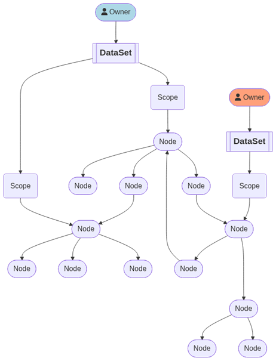

Implementing a DAG in Rust
For the past few months, I've been playing with Rust. As I'm completely new to the language, there's much to learn and explore. I plan to make notes on this blog whenever I discover something useful.
In Rust, at first glance, the ownership mechanism looks logical and simple - every value must always have exactly one owner. When the owner goes out of scope, the values it owns are automatically dropped. A value can be borrowed either through a mutable reference, of which there can be at most one at a time, or through immutable references, of which there can be more than one. In other words, there can either be a single writer or multiple readers of every value. That all makes sense and is clear in simple cases. Well, it turns out this mechanism can get pretty tricky with recursive data structures.
In my case, I needed to implement a DAG (directed acyclic graph) whose different roots can have different owners. So, something like this:

Notice how each Node can have more than one parent. Which is what makes this case problematic, because a parent Node needs to sometimes act as an owner, and sometimes only have a reference.
I tried a couple of different approaches. In the end, the only one that worked was using Rc<T>.
In my case the data structure looked like this:
use std::rc::Rc;
pub enum Node {
Seq(Vec<Rc<Node>>),
// ...
}
pub struct Scope {
root: Rc<Node>,
// ...
}
pub struct DataSet {
scopes: Vec<Scope>,
// ...
}Which allowed me to create Scopes using a new Node like this:
let scope = Scope {
root: Rc::new(Node::Seq(...)),
// ...
};Or using an existing Node like this:
let scope = Scope {
root: Rc::clone(&node),
// ...
};If you want to see more details, you can check the full implementation in my Yet Another (Static) Site Generator repository on GitHub.